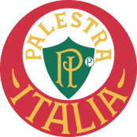
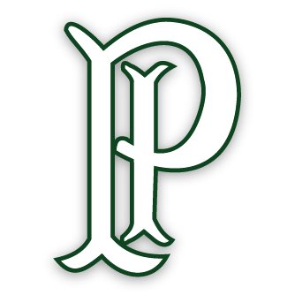
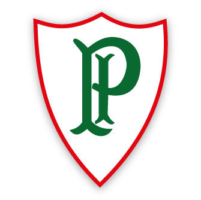
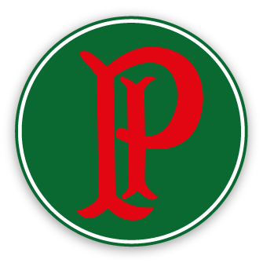
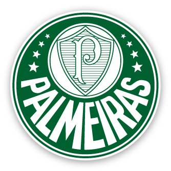

- Palestra Italia
Elaborado nos primeiros anos de vida do clube, era o símbolo institucional utilizado em impressos, carteiras sociais e na bandeira oficial.
- Camiseta
Foi o 1° distintivo utilizado na camisa do clube. As letras arcaicas “P” e “I”, nas cores brancas, estampavam o lado esquerdo do peito do uniforme verde do Palestra Italia.
- Camiseta
Para a disputa do Campeonato Paulista de 1916, a diretoria palestrina decidiu importar da Itália um jogo de camisa com o escudo da Cruz de Savoia, símbolo da Casa Real Italiana.

- Camiseta
O contorno da Cruz de Savoia permaneceu, mas o desenho interno trouxe de volta as letras “P” e “I”, desta vez inseridas em um fundo verde.

- Camiseta
Em novo distintivo, o formato da Cruz de Savoia permaneceu, mas ganhou contorno na cor vermelha e preenchimento branco. No centro, as letras "P" e "I" entrecortando-se mudaram para a cor verde.
- Camiseta
O formato do distintivo passou a ser circular, orlado de vermelho em um fundo branco. No centro, as letras "P" (na cor verde) e "I" (em vermelho) entrecortando-se.

- Camiseta
Com o mesmo formato circular, mudou-se apenas a disposição das cores – orlado de verde num fundo branco. No centro, as letras "P" e "I" passaram a aparecer ambas em vermelho.

- Camiseta
Com o mesmo formato circular, nova mudança na disposição das cores – desta vez, orlado de branco num fundo verde. No centro, as letras "P" e "I", ambas em vermelho, entrecortando-se.
- Palestra de São Paulo
Símbolo provisório utilizado no período da mudança de nome. O centro da circunferência menor foi descolocado para baixo, com o contorno da Cruz de Savoia preenchido de verde com o “P” inserido em amarelo

- Palmeiras Atual
Na circunferência menor, foi recolocado o contorno da Cruz de Savoia, preenchido por 26 linhas alusivas ao dia de fundação do clube e em branco e as oito estrelas, que fazem referência ao mês de fundação do Palestra (26/08).
